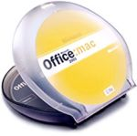

Dan's Home Page
Introduction
Research
Computer
Stuff
Fun
Stuff
Friends

About Me
I'm a software design engineer working for Microsoft, working on Outlook Express for the Macintosh. Before that completed my PhD in biophysics at Harvard University working in Markus Meister's lab. I am originally from Santa Barbara, CA , and I went to college at Harvey Mudd College, where I majored in physics.
Update! I'm now working on Entourage, part of Office 2001, Macintosh Edition, which just shipped! Some day I'll update the rest of the page :-)

My wife Nicole and I are up to 4 cats now. It all started with Tallulah and Lilbit, and now we've adopted Pacey and Max. If you are nosey, you can check out a picture of Nicole and me.
{kind=link}
{kind=link}
{kind=link}
News
- We've adopted more cats
- Pacey and Max joined our family this summer ('99).
- Cat pictures!
- We got a digital camera (Coolpix 950), so we've got some new cat pictures. First are some pictures of Max, starting when he first showed up with his mom and siblings in our back yard, until we finally adopted her (or she adopted us). Then, there are a bunch of other random cat pictures.
- New house
- Nicole and I bought a house in San Jose!
- I'm employed
- I've given up the consulting life, and I'm now working for Microsoft on Outlook Express.
Geek
Code
GS d? p c++ !l u++ e+++ m+(-) s++ n- h- f+ !g w+ t r y
-Oingo Boingo